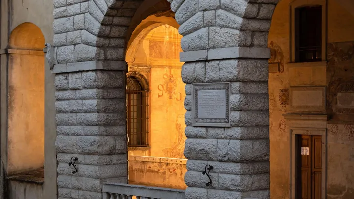

da ven 27 nov a dom 10 ott
“Note di rinascita della piccola Fenice”
La musica torna ad animare il Teatro de la Sena con “Note di rinascita della piccola Fenice”, una rassegna musicale che propone cinque appuntamenti da novembre 2026 a febbraio 2027, offrendo al pubblico un percorso attraverso generi, repertori e interpreti diversi.
 Indicazioni
Indicazioni
- Costi e prenotazioni
- Costo non indicato · Prenotazione non indicata
- Programma
- Programma da verificare. Apri la fonte ufficiale per orari e possibili aggiornamenti.
- In caso di maltempo
- Nessuna indicazione specifica pubblicata.
- Note
- Acquisito automaticamente dalla fonte.
L’EVENTO
Descrizione completa
La musica torna ad animare il Teatro de la Sena con “Note di rinascita della piccola Fenice”, una rassegna musicale che propone cinque appuntamenti da novembre 2026 a febbraio 2027, offrendo al pubblico un percorso attraverso generi, repertori e interpreti diversi.
La manifestazione nasce con l’obiettivo di valorizzare il patrimonio culturale e musicale del territorio, promuovere occasioni di incontro e partecipazione e riportare al centro della vita culturale cittadina uno dei suoi luoghi più rappresentativi.
Il programma è stato realizzato con il sostegno dell’Associazione culturale bellunese “Arte Nuova”, da tempo impegnata nella promozione e diffusione della cultura musicale e artistica e della “Banda Città di Feltre”, storica istituzione musicale cittadina, punto di riferimento fondamentale per la formazione e la diffusione della cultura bandistica e musicale locale.
Si parte con un evento straordinario per l'80° anniversario della Repubblica Italiana con un percorso storico-musicale, dedicato all’Inno di Goffredo Mameli nella sua forma integrale e con la versione originale della musica di Michele Novaro del 1847 che vedrà protagonista il tenore Francesco Grollo, accompagnato al pianoforte dal M° Antonio Camponogara, per poi proseguire con il solenne Concerto di Natale dell'Orchestra Filarmonia Veneta, le note festive di Capodanno della Banda cittadina , il talento dei Giovani Archi e le emozioni del gran Concerto Lirico .
Un viaggio unico tra arte, tradizione e calore natalizio.
IL PROGRAMMA
Programma e orari
Appuntamenti raccolti dalle fonti elencate. Dove manca un orario, non è ancora disponibile in questa scheda.
Programma pubblicato
- 2026-11-27 — 2026-11-27 · 18:30:00
- 2026-12-22 — 2026-12-22 · 20:30:00
- 2027-01-01 — 2027-01-01 · 17:30:00
- 2027-02-15 — 2027-02-15 · 20:30:00
- 2027-10-10 — 2027-10-10 · 18:30:00
INFORMAZIONI UTILI
Prima di partire
- Controllare la fonte prima di partire.
ORGANIZZAZIONE